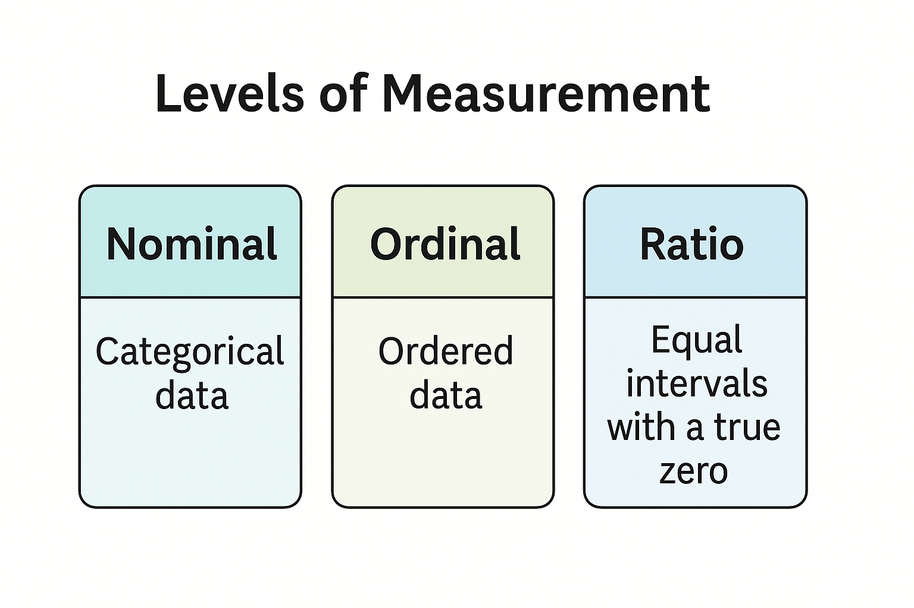
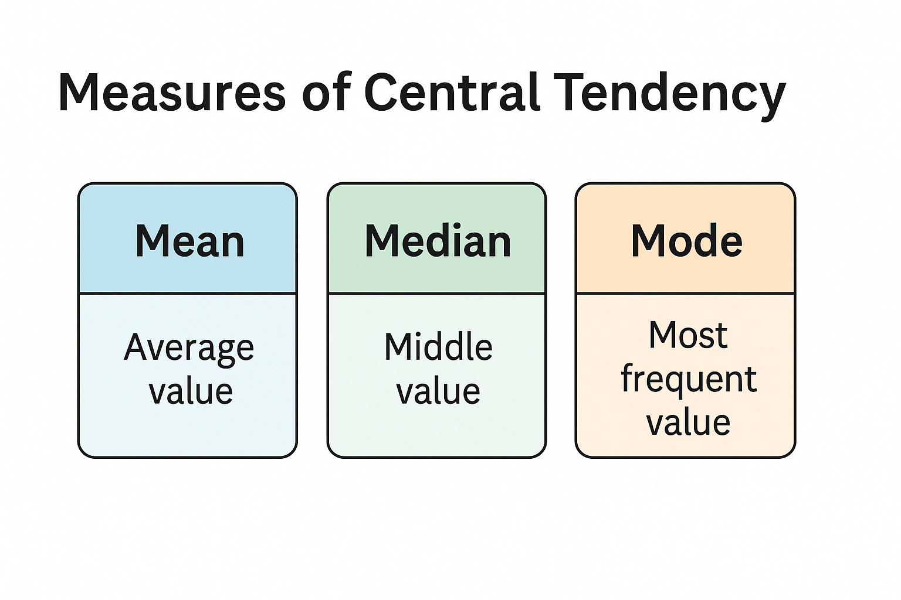
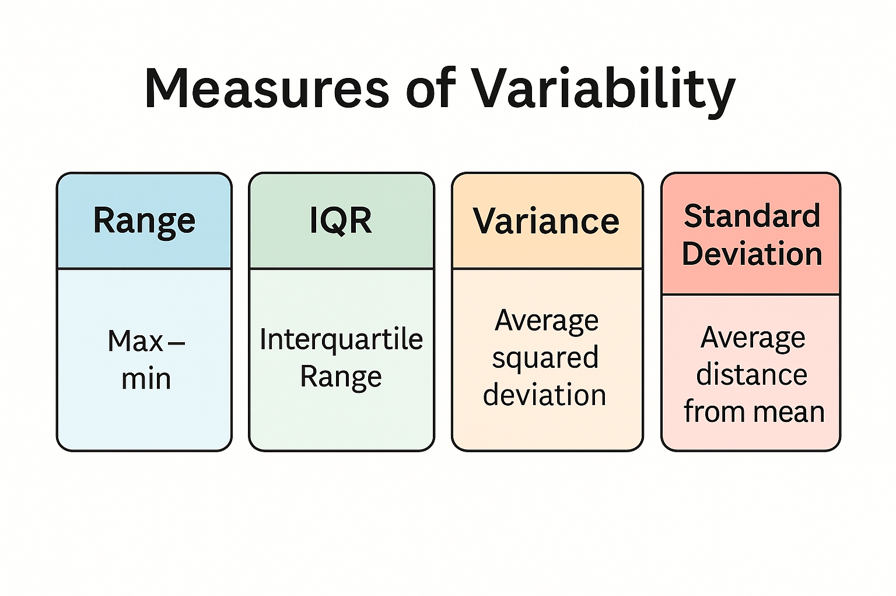

Descriptive Statistics
Introduction: Why We Begin With Descriptive Statistics
Whenever you collect data — questionnaire responses, reaction times, ratings of emotion, stress scores, memory accuracy — the raw numbers rarely speak for themselves. A column of values may contain important information, but without structure it is impossible to know what story the data tell.
Descriptive statistics provide that first layer of structure. They help you understand what the numbers mean before you attempt any interpretation or run any formal test. If you think of statistical analysis as building a house, descriptive statistics are the foundation. Without them, the entire building becomes unstable.
When students first enter psychology, they often imagine statistics as formulas or tests. But real statistical thinking begins earlier: with the ability to summarise, describe, and interpret data in everyday language. You learn to look at numbers and see patterns, not noise. This skill is essential — not only for future topics like regression, correlation, or ANOVA, but for scientific reasoning more broadly.
Why Psychologists Depend on Descriptive Statistics
People differ in countless ways: how strongly they react to stress, how quickly they form memories, how empathic they are, how often they worry, how well they sleep. Because psychological characteristics vary so widely, researchers must describe this variation carefully and responsibly.
Descriptive statistics answer questions such as:
- What is the typical value in the sample?
- How much do individuals differ from each other?
- Are most values clustered together or spread out?
- Are there unusually high or low values?
- Do two groups show meaningful differences before running any test?
These are not trivial questions. They determine whether the data you collected make sense, whether they match your expectations, whether your measurement worked properly, and whether it is appropriate to proceed to the next analytical step.
Good researchers always begin with descriptive statistics because this initial understanding ensures responsible interpretation later on. If you skip this step, you risk basing your conclusions on misunderstandings — for example, assuming a group is more anxious when in fact the difference is driven by a single extreme participant.
Understanding Levels of Measurement: The Foundation for Everything Else
Before you summarise a variable, you must understand what kind of variable it is. This is not a technical detail — it determines which statistics are meaningful and which would be misleading or even wrong.
Think of it this way: You cannot treat colours, temperature, and reaction times as if they were the same kind of information. Different data types support different operations.
We distinguish four levels of measurement: nominal, ordinal, interval, and ratio. Below, each is explained in depth, with psychological examples.
Nominal Level
Nominal variables contain categories that have no inherent order — they simply label groups.
Examples include:
- therapy type (CBT, ACT, psychodynamic)
- coping style categories
- handedness
- type of emotion being expressed (anger, joy, fear)
- diagnosis categories
These categories tell us which group someone belongs to, not how much of something they have.
What summaries make sense?
We can meaningfully compute:
- counts (“How many people responded with each option?”)
- proportions (“What percentage chose each category?”)
What is not meaningful?
An average would be meaningless because averaging categories implies numerical distance where none exists.
If three participants prefer “CBT,” “ACT,” and “psychodynamic,” the “average” of these three labels has no psychological interpretation. There is no quantity we can interpolate between “CBT” and “ACT.” A category is a name, not a number.
This is why nominal data are never summarised with means, medians, or SDs. They do not represent numerical magnitude.
Ordinal Level
Ordinal variables represent ordered categories, but the spacing between categories is not guaranteed to be equal.
Examples:
- Likert ratings (1 = strongly disagree to 5 = strongly agree)
- symptom severity (“mild,” “moderate,” “severe”)
- ranking tasks (“1st”, “2nd”, “3rd”)
- perceived stress levels on a 3-point scale
These variables tell us relative order — who has more or less of something — but they do not guarantee equal distance between levels.
A jump from “moderate” to “severe” does not necessarily equal the jump from “mild” to “moderate.” Similarly, the psychological distance between “agree” and “strongly agree” might not match the distance between “neutral” and “agree.”
What summaries make sense?
- medians
- percentiles
- rank-based statistics
- ordered bar charts
What about means?
Psychologists often report means for Likert scales, but this is a matter of convention rather than strict mathematics. The mean can be used if you interpret it cautiously and understand its limitations.
Interval Level
Interval variables have:
- equal spacing between units, and
- no true zero.
A classical example is temperature measured in Celsius or Fahrenheit.
In some psychological contexts, variables behave approximately interval-like, even if not perfectly: for instance, a 0–100 scale measuring subjective well-being, where each point is designed to represent an equal step.
Because spacing is assumed to be equal, we can compute:
- means
- standard deviations
- correlations
- z-scores
Why does “no true zero” matter?
Because without a true zero, ratios become meaningless. For example, 20°C is not “twice as warm” as 10°C — the zero point is arbitrary.
Thus, interval data support many operations, but not ratio statements.
Ratio Level
Ratio variables are the most informative type. They have:
- equal spacing, and
- a meaningful zero that represents the total absence of the quantity.
Examples include:
- reaction time (0 ms means no time elapsed)
- number of correct answers
- hours slept
- anxiety symptoms counted on a 0–40 scale
Because zero means “none,” ratios become meaningful:
- A reaction time of 600 ms is twice as long as 300 ms.
- A score of 20 symptoms represents twice the number of symptoms as a score of 10.
Ratio variables allow all descriptive measures:
- mean
- median
- SD
- IQR
- correlations
- ratios
- comparisons of magnitude
This is why many psychological measurements aim, when possible, to approximate a ratio scale.
Central Tendency: Describing the “Typical” Score
Every distribution has a central point where most values cluster. Understanding this “centre” helps answer questions like:
- What is a normal level of stress in this group?
- What is a typical reaction time for this task?
- What is the usual score on a well-being questionnaire?
We use three main measures: mean, median, and mode.
The Mean
The mean is what people often call “the average.” It adds all values and divides by the number of observations.
It uses all information in the dataset, which makes it powerful — but also vulnerable.
If one individual reports an extremely high stress score, the mean shifts noticeably. This makes the mean sensitive to outliers.
The Median
The median is the middle value once data are ordered. Half the values lie below it and half above.
It is robust against outliers. If you add one extremely high value, the median remains nearly unchanged.
This often makes the median more informative for skewed psychological variables such as stress, rumination, sadness, or reaction times.
The Mode
The mode is the most common value.
Useful when:
- categories are involved,
- a distribution has multiple peaks,
- or you want to identify the most frequent response.
Variability: How Much People Differ
Understanding the centre is not enough. Two groups might have the same typical value but differ dramatically in how spread out their scores are.
Variability tells you:
- whether people are similar or diverse,
- whether a questionnaire captures wide differences,
- whether groups are consistent or mixed.
Range
Max minus min. Simple but heavily distorted by outliers.
Interquartile Range (IQR)
Captures the spread of the middle 50%. Resistant to extreme scores.
Standard Deviation (SD)
Shows the average distance of each value from the mean.
- If SD is small → participants are similar.
- If SD is large → a lot of diversity.
SD is crucial in psychology because it helps describe how strongly people differ in the very traits we study.
Shape of a Distribution: The Story Behind the Numbers
The centre and variability are just two elements. The shape of the distribution completes the picture.
A distribution can be:
- symmetric
- right-skewed (a few very high values)
- left-skewed (a few very low values)
- bimodal
- flat
Each shape reflects a different psychological process.
For example:
- A right-skewed distribution of worry levels suggests that while most individuals worry moderately, a minority worry intensely.
- A bimodal distribution of reaction times may hint that participants used two different strategies.
Interpreting shapes makes you a better thinker because you learn to see patterns rather than focusing solely on numbers.
Comparing Groups Descriptively
Much of psychology involves comparing groups: people in different conditions, treatments, environments, or roles.
Descriptive comparisons help you see:
- whether one group tends to score higher or lower,
- whether variability differs,
- whether one group shows more extreme or unusual values,
- and whether group differences look meaningful even before testing.
These descriptive insights guide hypotheses, interpretation, and responsible scientific reasoning.
Why All of This Matters for Your Future in Statistics
Descriptive statistics may seem simple at first glance, but they are deeply foundational. Every later topic — probability, confidence intervals, regression, ANOVA, correlation — relies on concepts introduced here.
If you understand:
- types of variables,
- measures of centre,
- measures of variability,
- distribution shapes,
- group differences,
then the rest of statistics becomes far less intimidating.
Descriptive statistics teach you how to read data, not just compute numbers.
They train the interpretative skills that every psychologist needs — from designing better studies to understanding your own findings.
Simulated Study: Exam Anxiety in First-Year Students
To see how descriptive statistics work in practice, we use a realistic simulated dataset. Imagine a study in which 160 first-year students complete a short questionnaire one week before an important exam.
For each student, we record:
- an anonymous
id
- a self-reported stress group (
Low stressvs.High stress)
- gender in three categories (
Woman,Man,Diverse)
- an exam_anxiety score (0–40 scale; higher = more anxiety)
- sleep_hours, the average hours of sleep per night in the last week
- a 1–5 satisfaction rating with their study situation
The following code (hidden in the HTML) simulates this dataset and prepares all tables and plots.
Step 1: Exploring the Raw Data
Before computing any descriptive statistics, it is important to look at the raw data. The table below shows the full dataset. You can sort columns, search for specific values, and scroll through all 160 students.
This first inspection helps you check whether the data look plausible. Sleep values concentrate between 3 and 10 hours and are stored with one decimal place. Exam anxiety scores lie between 0 and 40 and are rounded to whole numbers. Satisfaction ratings run from 1 to 5. The categories for stress group and gender appear with reasonable frequencies. If anything looked obviously wrong here, we would correct it before moving on.
Step 2: Describing Nominal Variables – Stress Group and Gender
Stress group and gender are nominal variables: they divide students into categories without implying any numerical order. We describe them with counts and percentages.
| Stress group | n | % |
|---|---|---|
| High stress | 84 | 52.5% |
| Low stress | 76 | 47.5% |
| Gender | n | % |
|---|---|---|
| Diverse | 6 | 3.8% |
| Man | 42 | 26.2% |
| Woman | 112 | 70.0% |
These tables show how students are distributed across groups. Slightly more students fall into the low-stress group than the high-stress group, and gender categories are represented with proportions that look realistic for an introductory psychology cohort. At this stage we are not interpreting differences; we are simply describing who is in our sample.
Step 3: Describing an Ordinal Variable – Study Satisfaction
Satisfaction is measured on a 1–5 scale and is therefore ordinal: larger numbers mean higher satisfaction, but the distances between adjacent categories are not assumed to be equal. We again use counts and percentages.
| Satisfaction | n | % |
|---|---|---|
| 2 | 1 | 0.6% |
| 3 | 27 | 16.9% |
| 4 | 80 | 50.0% |
| 5 | 52 | 32.5% |
From this table you can see whether most students are satisfied, neutral, or dissatisfied with their study situation. A distribution concentrated on the higher values suggests that, despite exam stress, many students feel reasonably positive about their studies. A more balanced or lower distribution would indicate a different mood in the group.
Step 4: Overall Descriptives for Exam Anxiety
Now we turn to exam_anxiety, a ratio-level variable where it makes sense to compute means and standard deviations. We first describe anxiety for the entire sample.
| n | Mean | Median | SD | IQR | Min | Max |
|---|---|---|---|---|---|---|
| 160 | 21.1 | 21 | 5.9 | 7.2 | 6 | 39 |
The mean and median indicate what a typical level of exam anxiety looks like in this group. The standard deviation and interquartile range describe how much students differ from one another: a larger SD would mean that some students are much calmer or much more anxious than the average. The minimum and maximum show the range of anxiety we actually observed, which helps us see whether scores span the full scale or cluster in a narrower band.
Step 5: Comparing Anxiety Between Stress Groups
Because students rated themselves as low or high stress, it is natural to ask whether their measured exam anxiety reflects this subjective classification. We start with group-wise descriptive statistics.
| Stress group | n | Mean | Median | SD | IQR |
|---|---|---|---|---|---|
| High stress | 84 | 24.2 | 23 | 5.0 | 7.2 |
| Low stress | 76 | 17.7 | 18 | 4.9 | 6.0 |
If both the mean and the median are clearly higher in the high-stress group, this suggests that students who feel stressed about the exam do in fact report more anxiety on the questionnaire. If the standard deviation and IQR are also larger, it indicates that the high-stress group is more diverse, containing both moderately and extremely anxious individuals.
This descriptive comparison already gives a strong impression of group differences, even before any hypothesis test is carried out.
Step 6: Visualising the Distribution of Exam Anxiety
Numerical summaries are helpful, but they cannot show everything. A histogram gives a direct view of the shape of the distribution.
The histogram shows how many students fall into each range of anxiety scores. In this simulated dataset, most students cluster around moderate values in the middle of the 0–40 scale. Scores taper off toward the extremes, meaning that very low and very high anxiety are relatively rare.
The overall shape is fairly symmetric, without a long tail to one side. This pattern suggests that the mean and median are similar and that the distribution does not contain strong skewness. Psychologically, it matches the idea that many students feel noticeable but not overwhelming exam anxiety, with only a few at either extreme.
Step 7: Visualising Group Differences with a Boxplot
To compare groups visually, boxplots are very effective. They summarise the centre, spread, and potential outliers for each group side by side.
In the boxplot, each box represents the central 50% of anxiety scores in one group, with the horizontal line indicating the median. In this example, the high-stress group’s box is clearly higher on the vertical axis, showing that the typical high-stress student reports more anxiety than the typical low-stress student.
The height of each box (the interquartile range) and the length of the whiskers indicate how much variability there is. If the high-stress box is taller, it means that anxiety scores in this group are spread over a wider range. Occasional points outside the whiskers represent students whose scores are unusually low or unusually high compared to their group peers.
Together with the table of group-wise descriptives, the boxplot gives a rich descriptive picture: not only do high-stress students tend to be more anxious, they also differ more strongly from one another.
Summary of Practice Concepts
In this Practice section, you have seen how descriptive statistics translate from theory to a concrete dataset. You explored nominal variables via frequency tables, described an ordinal satisfaction rating using counts and percentages, summarised a ratio-level anxiety score with means, medians, standard deviations, and interquartile ranges, and used histograms and boxplots to visualise both the overall distribution and differences between groups.
These skills are the everyday tools of data description in psychology. Once you are comfortable with them, later topics—such as probability, confidence intervals, hypothesis testing, correlation, and regression—will feel more grounded, because they build directly on the same ideas you have just applied here.
Summary of Descriptive Statistics
Descriptive statistics form the foundation of all quantitative reasoning in psychology. Before any hypothesis can be tested or any model can be fitted, the first step is to ask what the data actually look like. This requires recognising what type of variable we are dealing with, choosing descriptive measures that match that level of measurement, and combining numerical summaries with informative visualisations. When done well, this initial description already answers many important questions and prevents serious misinterpretations.
Understanding levels of measurement is central. Nominal variables, such as categories of stress group or types of therapy, can be summarised with counts and percentages but not with means or standard deviations. Ordinal variables, such as satisfaction ratings, preserve an order but not equal spacing between categories, which is why medians and distributions over categories are more appropriate than precise arithmetic interpretations. Interval and ratio variables, such as exam anxiety scores or hours of sleep, allow meaningful calculations of means, standard deviations, and correlations, because the underlying scale has equal steps and, in the ratio case, a meaningful zero.
Measures of central tendency and variability then provide a concise description of where values tend to lie and how much individuals differ from one another. The mean and median locate the centre of a distribution, while the interquartile range and the standard deviation describe its spread. Simple as they are, these summaries are invaluable, especially when they are interpreted in combination rather than in isolation. A large standard deviation, for example, changes the meaning of a given mean: the same average can represent very different situations depending on whether most individuals are similar or highly diverse.
Visualisations add a further layer of insight. Histograms reveal the overall shape of a distribution, highlight skewness and potential clusters, and make it easier to spot unusual patterns. Boxplots summarise centre and spread in a compact way and make comparisons across groups immediately visible. In the exam anxiety example, a histogram showed a roughly bell-shaped distribution, while boxplots made clear that the self-reported high-stress group had both higher typical anxiety and greater variability.
Taken together, the descriptive tools introduced in this topic help build a deep and intuitive understanding of psychological data. They allow us to summarise observations accurately, to distinguish between different kinds of variables, to describe distributions clearly, and to identify patterns that may motivate further analysis. By mastering descriptive statistics, you lay the groundwork for all subsequent topics in statistics. Probability, confidence intervals, hypothesis testing, correlation, regression, and ANOVA will all make more sense once the descriptive foundations are solid. Descriptive statistics are not just an introduction; they are the first essential step in every serious analysis of psychological data.
Summary Visuals

Overview of Levels of Measurement: Nominal, Ordinal, Interval, Ratio

Measures of Central Tendency: Mean, Median, Mode

Measures of Variability: Range, IQR, Variance, Standard Deviation